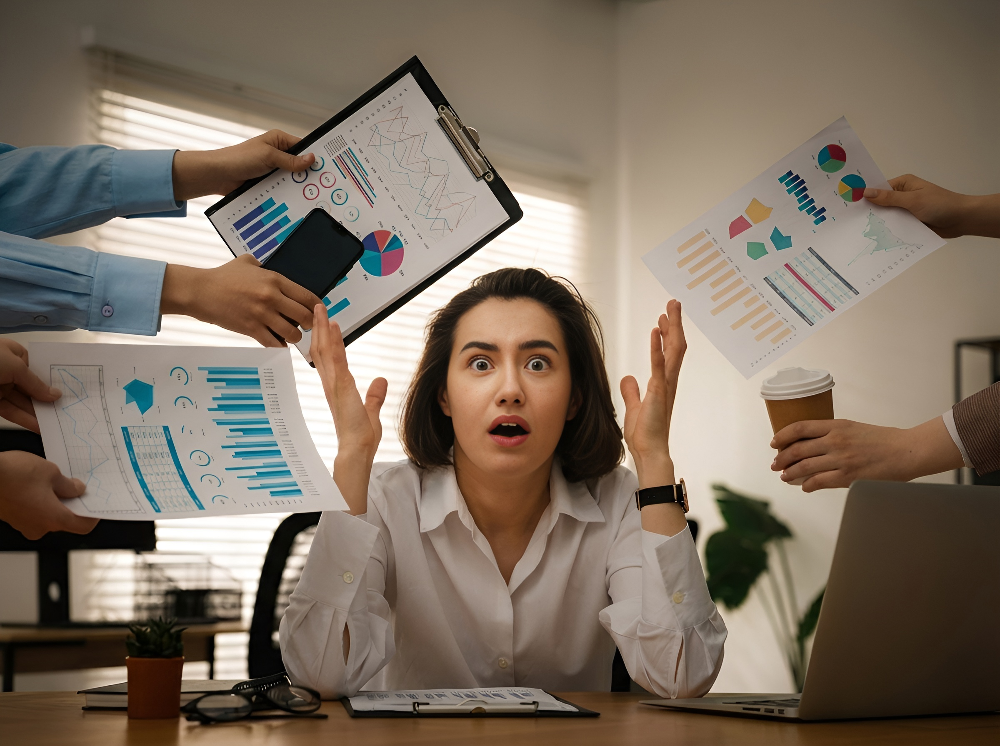
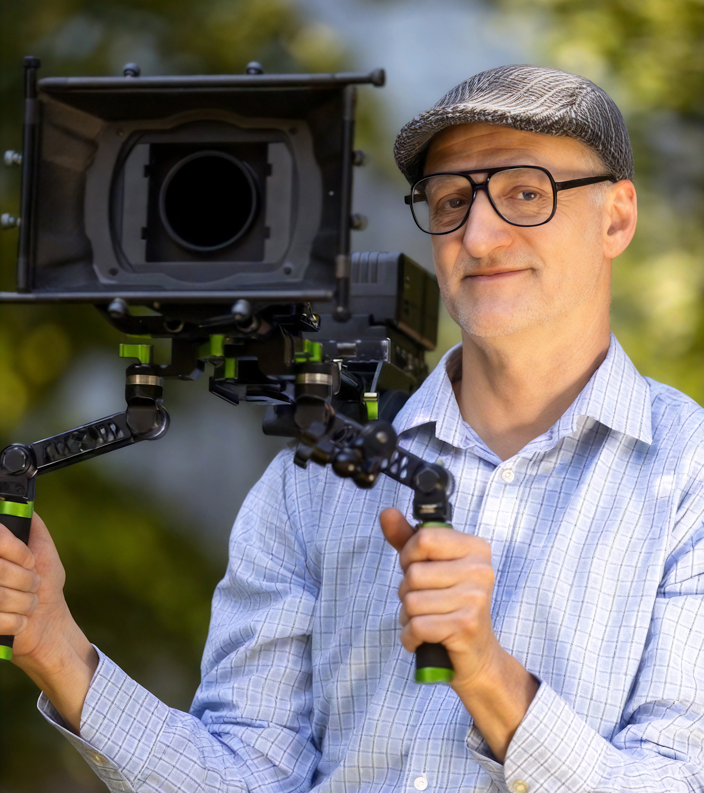
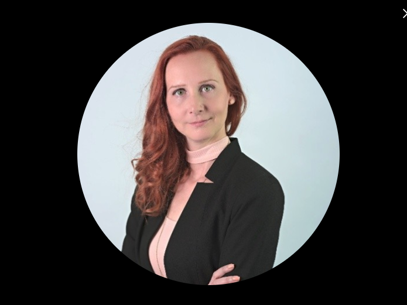
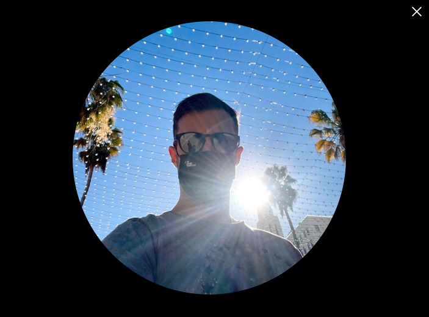

Trusted Partners // 01




Nápad, scénář, produkce a postprodukce až po finální video. Jsme [REC]PIC videoprodukce — nástroj pro váš vizuální růst.

Lidé Váš obsah ignorují. Ne proto, že by nebyl důležitý, ale protože je nezaujme.
Vysvětlujete složité věci pořád dokola. A stejně jim málokdo opravdu rozumí.
Vaše komunikace nefunguje. Lidé si ji nepamatují a nerozhodují se podle ní.

Vidíme, jak důležité informace zapadají v dlouhých textech, složité nabídky se špatně vysvětlují a obsah lidi jednoduše nebaví. A také víme, jak frustrující je, když komunikace bere čas i energii, ale výsledek se nedostavuje.
Právě proto naše kreativní video produkce [REC]PIC dělá videa, která věci zjednoduší, zpřehlední a konečně rozfungují.
Na trhu působíme už 16 let. Ať už potřebujete natáčení rozhovoru, korporátní video nebo video pro sociální sítě, vždy vám dodáme funkční řešení.
Nemusíte řešit techniku, štáb ani detaily. Produkci řešíme od nápadu po finální výstup. Rychle, v termínu a za dobrou cenu.
Vždy řešíme, co má video skutečně splnit: vysvětlit složitou věc, podpořit důvěru, zaujmout na sítích nebo pomoci s náborem.
Ať už reklamní video nebo promo video pro sociální sítě, produkty, služby i sdělení měníme na videa, kterým lidé lehce porozumí a reagují na ně.

Potřebovali jsme jednoduše ukázat, že výroba CAG dveří je z velké části proces nejen pomocí strojů, ale také ruční práce. Video od RECPIC naši vizi převedlo do srozumitelného příběhu, který zákazníkovi tento proces jednoduchou formou představí. Děkujeme.

Jsme interaktivní muzeum v centru Prahy. Chtěli jsme přilákat víc návštěvníků. Byla to naše první spolupráce s Ivanem z RECPIC. Jeho tým dokázal skvěle přenést atmosféru muzea do kampaní, díky kterým lidé přesně vědí, proč k nám přijít.
Jako prodejci potravinových doplňků jsme spolupracovali s Ivanem na videích pro značku Maxulen. Všechno šlo hladce, videa pomohla rozptýlit pochybnosti kolem důvěry i účinků a výrazně zjednodušila online komunikaci — mohu doporučit.

Zoom call, mobil nebo email. Nevíte si rady a potřebujete poradit? Ozvěte se nám.
Bez toho to prostě nejde. Vytvoříme promyšlený scénář s jasným sdělením a silným příběhem.
Každý projekt je jiný, víme to. Dostanete přehlednou kalkulaci a řešení na míru vašim možnostem.
Zajistíme vhodné herce i lokace tak, aby vše vizuálně i obsahově sedělo záměru videa.
Profesionální vybavení, světla, dron i kvalitní audio technika – základ pro opravdu skvělé výsledky.
Kompletní střih, barvy, zvuk i grafika. Hotové video připravené k publikování.
Cena se nejčastěji pohybuje mezi 50–250 tisíci Kč podle rozsahu projektu. Záleží na délce videa, počtu natáčecích dní, lokacích, počtu kamer, náročnosti postprodukce nebo animací. Vždy připravujeme rozpočet na míru – bez skrytých položek. Součástí bývá scénář, natáčení, střih, hudba, barevné korekce i výstupy pro sociální sítě.
Standardní firemní video obvykle vzniká během 3–6 týdnů. Kratší formáty (rozhovory, eventové video) mohou být hotové rychleji. Záleží hlavně na schvalovacím procesu a rozsahu příprav. Termín vždy nastavujeme realisticky a držíme ho.
Ano. Většina klientů nepřichází s hotovým scénářem – a to je v pořádku. Nejprve si ujasníme cíl videa (brand, nábor, obchod, onboarding…) a podle něj navrhneme koncept i strukturu. Umíme převést složité informace do srozumitelného příběhu.
To je běžná situace. Provedeme vás celým procesem krok za krokem – od přípravy až po finální výstup. Řekneme vám, jak se připravit, co si nachystat a během natáčení vás budeme přirozeně vést, aby výsledek působil profesionálně a zároveň autenticky.
Standardně počítáme s několika koly úprav v rámci domluveného rozsahu. Naším cílem není „rychle odevzdat", ale vytvořit video, se kterým budete opravdu spokojeni. Zároveň držíme proces efektivní, aby se projekt zbytečně neprotahoval.
Sídlíme v Praze, ale realizujeme projekty po celé České republice. U větších zakázek není problém ani zahraničí. Dopravu a logistiku řešíme jako součást produkce.
Nejčastěji jde o: firemní a brandová videa, náborová videa a employer branding, eventová videa a záznamy konferencí, rozhovory a podcasty, produktová a technologická videa. Pracujeme s jednotlivci a firmami z oblasti technologií, IT, farmacie, developmentu, financí nebo vzdělávání.
Video samo o sobě není zázrak – ale správně navržené video dokáže výrazně zjednodušit vysvětlení produktu, zvýšit důvěru a zkrátit rozhodovací proces. V B2B prostředí často nahrazuje desítky slidů prezentací a pomáhá obchodníkům rychleji uzavírat zakázky.
Zajišťujeme kompletní servis: návrh konceptu a scénáře, harmonogram a plán natáčení, výběr lokací, techniku a štáb, případný casting, střih, hudbu, barevné korekce, animace, titulky a formátování pro sociální sítě.
Pokud hledáte spolehlivý tým, který dodrží termín, komunikuje otevřeně a přemýšlí nad výsledkem, ne jen nad hezkým obrazem, pravděpodobně si budeme rozumět. Nejlepší je krátká úvodní konzultace – během ní zjistíme, jestli dává spolupráce smysl pro obě strany.